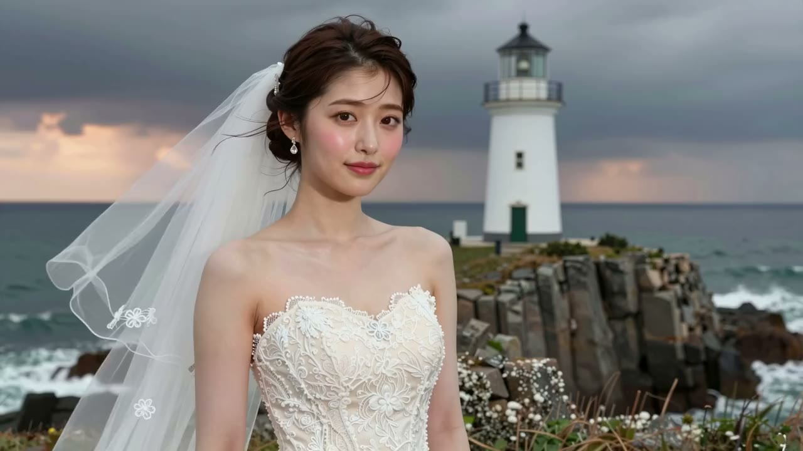

MV Studio
HOME
USE CASES — 用途から見る
何に、
使える
のか。
MV だけではありません。棚の様式と、同じ顔を保つキャラ、声での相談——同じ仕組みが、こんな用途に。

01
ブライダル前撮り
和装 200・洋装 200 の様式から。礼拝堂、港、神社——写真と短い動画を。
02
撮影会ポートレート
写真家の作風、芸術、雑誌、室内の撮影会——作風の違う 36 の様式で、一人のモデルを一日ぶん。
03
美容 — 化粧・髪型・アクセサリー
同じ顔のまま、髪型だけ・口紅だけ・耳元だけを変えて見せる。
04
解説動画
作り方そのものを番組に。解説 01〜05 とオフレコの棚卸し。